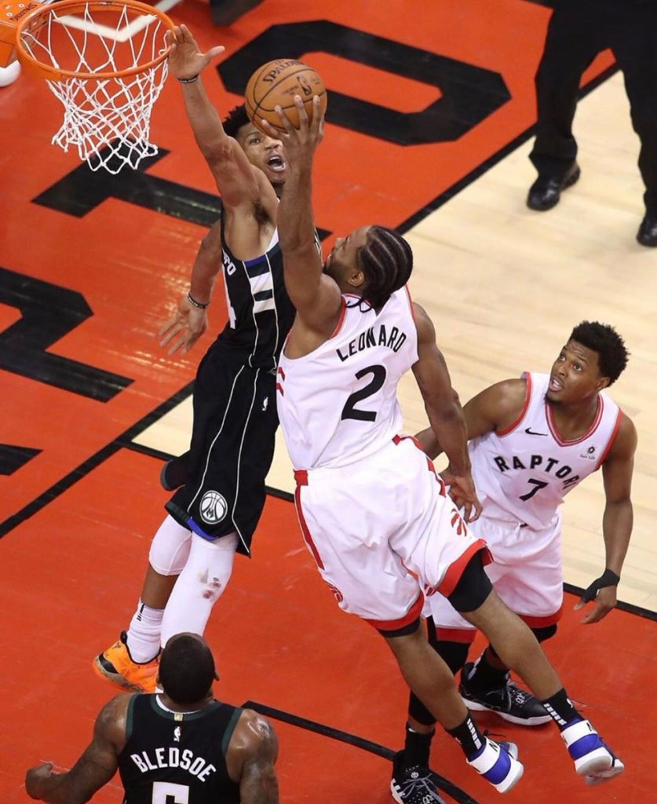

Serie vs Milwaukee Bucks
El primer partido el equipo de Milwaukee se lo llevó por 108-100Elsegundo partido también se lo llevaron los Bucks que derrotaron a los Raptors 125-103El siguiente partido los Raptors reaccionaron y se llevaron la victoria 118-112 gracias a un gran Kawhi LeonardEn el cuarto partido los canadienses igualaban la serie a dos al derrotar a los Bucks 120-102Por primera vez en la serie los raptors se ponían por delante gracias a la gran actuación de Leonard en un partido que ganaron 99-105El último partido de a serie tambien se lo llevó el equipo de Canadá que por primera vez en su historia iba a disputar una final por el título de la NBA al vencer 100-94
